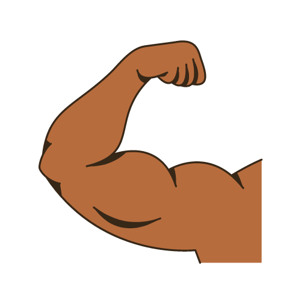

Mariana Gamino
NUTRIÇÃO ESPORTIVA E EMAGRECIMENTO
CRN2 13310
Acredito que todas as pessoas merecem realizar seus objetivos sem precisar perder saúde! Você na sua melhor versão integralmente!
Eu sou Mariana Gamino e nos últimos 12 anos eu entrego resultados, com uma abordagem única e totalmente individualizada.
Posso ajudar você, que busca um resultado estético, desempenho e qualidade de vida!
Emagrecimento Saudável
Hipertrofia e Rendimento
Tratamento de Doenças e Longevidade
Como podemos lhe ajudar?
Ficou interessada em saber como funcionam os nossos tratamentos, preços e disponibilidade? Clique no botão abaixo e solicite uma avaliação do seu caso e tenha todas essas respostas.
Contamos com atendimento

Avaliação física (pele, cabelo, unhas, dobras cutâneas, bioimpedância e perímetros), avaliação nutricional, avaliação de exames, avaliação de suplementação, anamnese com histórico de saúde e hábitos, realização de questionários de rastreamento metabólico e microbiota.

Avaliação física (pele, cabelo, unhas, dobras cutâneas, bioimpedância e perímetros), avaliação nutricional, avaliação de exames, avaliação de suplementação, anamnese com histórico de saúde e hábitos, realização de questionários de rastreamento metabólico e microbiota.
Avaliação física por fotos e medidas, avaliação nutricional, avaliação de exames, avaliação de suplementação, anamnese com histórico de saúde e hábitos, realização de questionários de rastreamento metabólico e microbiota.
Meus pacientes já conseguiram resultados incríveis com meu método, veja:
Quem é Mariana Gamino
Formada em Nutrição pela Universidade Federal de Pelotas, desde 2012.
Formada em Educação Física pela Universidade Federal de Pelotas, desde 2016.
Mestre em Educação Física na linha de Estudos Socioculturais do Esporte e da Saúde (ESEF/UFPel), desde 2018.
Especialista em Nutrição Esportiva e Emagrecimento, desde 2022.
Possui cursos na área de: Prescrição em Fitoterápicos e Suplementos, Saúde do Homem e da Mulher, Nutrição Funcional Esportiva, Estratégias nutricionais para Emagrecimento, Treinamento Esportivo: Performance e Fadiga Medicina do Estilo de Vida (MEV) Nutrição Emocional e Comportamental (NEC).
Trajetória Profissional
Com mais de 12 anos em atendimento clínico, tenho o foco em saúde e qualidade de vida, usando a abordagem da Medicina do Estilo de Vida (MEV) com foco na mudança de Hábitos em Saúde e a abordagem da Nutrição Emocional e Comportamental (NEC).
Professora de graduação na faculdade Anhanguera nos cursos de Nutrição, Educação Física, Biomedicina e Enfermagem e membro do Núcleo Docente Estruturante (NDE).
Professora de cursos de Pós-graduação e Especialização convidada.
Há 5 anos realiza orientação de estágios na área de nutrição clínica e saúde coletiva.
Há 12 anos palestrante nas áreas de emagrecimento, hipertrofia, desempenho, estética, melhora da saúde e prevenção de doenças.
Encontre a Mariana Gamino na mídia
Solicite uma avaliação do seu caso
Ficou interessada em saber como funcionam os nossos tratamentos, preços e disponibilidade? Clique no botão abaixo e solicite uma avaliação do seu caso e tenha todas essas respostas.
Atendimentos Presenciais em:
Coletivvo OM - Deodoro, 1205 A Pelotas/RS
Atendimentos Online:
Plataforma Zoom
Contato para Palestras, cursos, treinamentos e serviço de Rotulagem Nutricional:
nutrimarianagamino@gmail.com